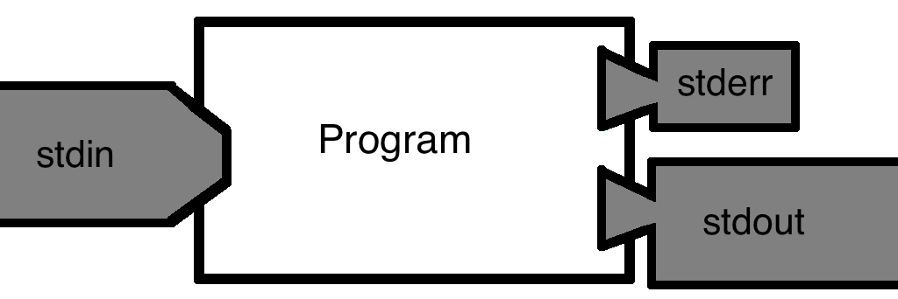
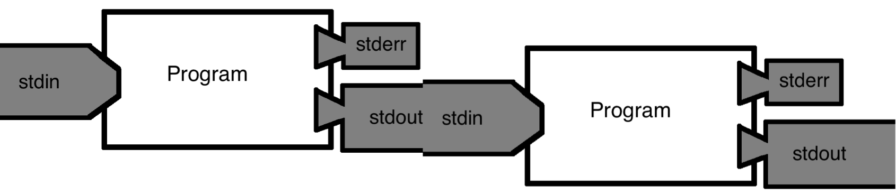
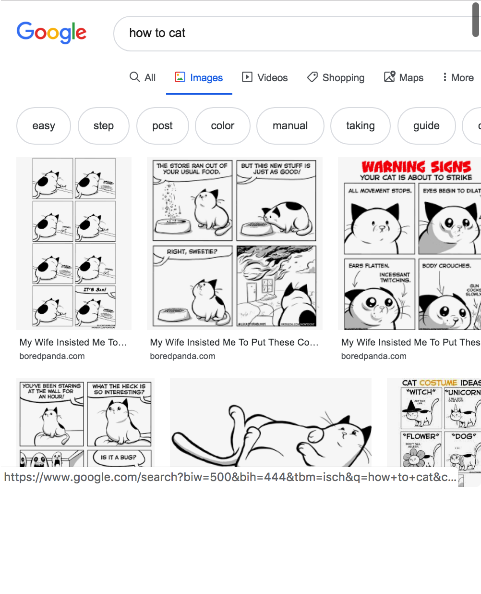

6 Introduction to the Command Line
For this chapter’s exercises, if not already performed, you will need to create the conda environment from the yml file in the following link (right click and save as to download), and once created, activate the environment with:
conda activate bare-bones-bash6.1 Lecture
Lecture slides and video from the 2022 edition of the summer school.
6.1.1 Session 1
This is the Brief version of a more Broad two-part session that we gave in 2022, which can be found here.
The teaching material for the Boundless Bare Bones Bash (Basic + Boosted) can be found in the Bare Bones Bash website.
The original Bare Bones Bash material was created by Aida Andrades Valtueña, James Fellows Yates, and Thiseas C. Lamnidis.
The author portraits were designed by Zandra Fagernäs.

All material is provided under a Creative Commons Attribution-ShareAlike 4.0 International License.
Below is a quick reference guide to the commands discussed in this tutorial. To understand actually what each command does, carry on reading below! For a complete run of all these commands AND MORE(!!), consider following the full Bare Bones Bash walkthroughs here.
| command | description | example | common flags or arguments |
|---|---|---|---|
| pwd | print working directory | pwd | |
| ls | list contents of directory | ls | -l (long info) |
| mkdir | make directory | mkdir pen | |
| cd | change directory | cd ~/pen | ~ (home dir), - (previous dir) |
| ssh | log into a remote server | ssh |
-Y (allows graphical windows) |
| mv | move something to a new location (& rename if needed) | mv pen pineapple | |
| rmdir | remove a directory | rmdir pineapple | |
| wget | download something from an URL | wget www.pineapple.com/pen.txt | -i (use input file) |
| cat | print contents of a file to screen | cat pen.txt | |
| gzip | a tool for dealing with gzip files | gzip pen.txt | -l (show info) |
| zcat | print contents of a gzipped file to screen | zcat pen.txt.gz | |
| whatis | get a short description of a program | whatis zcat | |
| man | print the man(ual) page of a command | man zcat | |
| head | print first X number of lines of a file to screen | head -n 20 pineapple.txt | -n (number of lines to show) |
| | | pipe, a way to pass output of one command to another | cat pineapple.txt | head | |
| tail | print last X number of lines of a file to screen | tail -n 20 pineapple.txt | -n (number of lines to show) |
| less | print file to screen, but allow scrolling | less pineapple.txt | |
| wc | tool to count words, lines or bytes of a files | wc -l pineapple.txt | -l (number of lines not words) |
| grep | print to screen lines in a file matching a pattern | grep pineapple.txt | grep pen | |
| ln | make a (sym)link between a file and a new location | ln -s pineapple.txt pineapple_pen.txt | -s (make symbolic link) |
| nano | user-friendly terminal-based text editor | nano pineapple_pen.txt | |
| rm | more general ‘remove’ command, including files | rm pineapple_pen.txt | -r (to remove directories) |
| $VAR | Dollar sign + text indicates the name of a variable | $PPAP | |
| echo | prints string to screen | echo “$PPAP” | |
| for | begins ‘for’ loop, requires ‘in’, ‘do’ and ‘done’ | for p in apple pineapple; do echo “$p$PPAP”; done applePen pineapplePen |
|
| find | search for files or directories | find -name ‘pen’ | -type f (search only for files) -name ’*JPG’ (search for file names matching the pattern) |
| “$var” | use double quotes to use contents of variable | pen=apple && echo “$pen” | |
| < > 2> |
redirects the standard input/output/error stream respectively into a file | cat <file.txt >file_copy.txt 2>cat_file.err |
{kind=link}
6.1.1 Introduction
The aim of this tutorial is to make you familiar with using bash everyday… for the rest of your life! More specifically, we want to do this in the context of bioinformatics. We will start with how to navigate around a filesystem in the terminal, download sequencing files, and then to manipulate these. Within these sections we will also show you simple tips and tricks to make your life generally easier.
This tutorial is designed so you follow along on any machine with a UNIX terminal (no warranty provided).
6.1.2 The 5 commandments of Bare Bones Bash
The Bare Bones Bash philosophy of learning to code follows five simple commandments:
| 1) Be lazy! | Desire for shortcuts motivates you to explore more! |
| 2) |
99% of the time, someone else has already had the same issue. |
| 3) Document everything you do! | Make future you happy! |
| 4) There will ALWAYS be a typo! | Don’t get disheartened, even best programmers make mistakes! |
| 5) Don’t be afraid of you freedom! | Explore! Try out things! |
Remember: No one writes code that works first time, or without looking at StackOverflow sooner or later.
6.1.3 What is a terminal?
A terminal is simply a fancy window that allows you to access the command-line interface of a computer or server (Figure 6.1).
The command-line itself is how you can work on the computer with just text.
bash (bourne again shell) is one of the most popular languages used in the terminal.
6.1.4 Understanding the command prompt

After opening the terminal what you will normally see is a blank screen with a ‘command prompt’, like the one shown above. This typically consists of your username, the device name, a colon, a directory path and ends with a dollar symbol. Like so:
<username>@<device_name>:~$The command prompt is never involved in any command, it is just there to ensure you know who and where you are. When copying a command you should NOT copy the command prompt.
Often times, when looking for commands online, the commands ran will pe prefaced with a $. This is a stand-in for the command prompt. When adding multi-line commands, it is also common to preface the additional lines with a >. When copying such commands it is therefore important to remove these characters from the start of each line (if present).
Finally, in this tutorial, the symbols<> are used to show things that will/should be replaced by another value. For example, in Thiseas’ command prompt <username> will be replaced by lamnidis, as that is his username.
Now back to your prompt: It tells you that you are in the directory ~. The directory ~, stands for your home directory. Note that this shorthand will point to a different place, depending on the machine and the user.
If you want to know what the shorthand means, (here comes your first command!) you can type in pwd, which stands for “print working directory”. Your “working directory” is whichever directory you are currently in.
pwd/home/ubuntuThis prints the entire “filepath” of the directory i.e. the route from the “root” (the deepest directory of the machine), through every subdirectory, leading to your particular working directory.
6.1.5 Absolute vs Relative paths
Filepaths (a.k.a. “paths”), come in two flavours. Let’s talk a bit about them!
- An absolute path will start with the deepest directory in the machine shown as a
/. Paths starting with~are also absolute paths, since~translates to an absolute path of your specific home directory. That is the directory path you see in the output of thepwdcommand you just ran. - Alternatively a relative path always begins from your working directory (i.e. your current directory). Often this type of path will begin with one (
./) or two (../) dots followed by a forward slash, but not always. In the syntax of relative pathways.means “the current directory” and..means “the parent directory” (or the ‘one above’).
6.1.5.1 A real life analogy for paths
You have just arrived to Leipzig for a summer school that is taking place at MPI-EVA. After some questionable navigation, you find yourself at the Bayerische Bahnhof. Tired and disheartened, you decide to ask for help.
You see a friendly-looking metalhead (Figure 6.2), and decide to ask them for directions!
I’m Happy to help, but I only give directions in absolute paths!
From Leipzig Main Station, you should take Querstraße southward.
Continue straight and take Nürnberger Str. southward until you reach Str. des 18 Oktober.
Finally take Str. des 18 Oktober. moving southeast until you reach MPI-EVA!
The directions above are equivalent to an absolute path, because they will ALWAYS take you to MPI-EVA, but you can only apply these directions if you start from Leipzig Main Station!
Examples of absolute paths:
/home/ubuntu
/Leipzig_Main_Station/Querstraße/Nürnberger_Str/Str_18_Oktober/Deutscher_Platz/MPI-EVA
Not sure how to get back to Leipzig Main Station to apply those directions, you decide to ask someone else for directions…
Lucky for you, a friendly looking local is passing by (Figure 6.3)!
You’re currently on Str. des 18 Oktober. Walk straight that way, past the tram tracks, and you will find Deutscher Platz. You will see MPI-EVA to your right!
These directions are equivalent to a relative path! They are easy to follow, but only work when you happen to start at the position you were in when you first got the directions!
Examples of relative paths:
./my_directory/my_file.txt
../Str_18_Oktober/Deutscher_Platz/MPI-EVA
6.1.6 Basic commands
We will now explore some basic commands that you will use to explore folders and interact with files:
- list directory contents:
lsOutput should look like:
Desktop Downloads Pictures Templates bin snap
Documents Music Public Videos cache thinclient_drivesWe will use this format to show you commands and their corresponding output in the terminal (if any) for the rest of this chapter.
- make a directory:
mkdir barebonesbash- move (or rename) files and directories
mv barebonesbash BareBonesBash- change directories
cd BareBonesBash- Download (www get) a remote file to your computer
wget git.io/Boosted-BBB-meta- copy a file or directory to a new location
cp Boosted-BBB-meta Boosted-BBB-meta.tsv- remove (delete) files
rm Boosted-BBB-meta- Concatenate file contents to screen
cat Boosted-BBB-meta.tsv- See only the first/last 10 lines of a file
head -n 10 Boosted-BBB-meta.tsvtail -n 10 Boosted-BBB-meta.tsvThis is because the start of a cat is its head and the end of the cat is its tail (The great humour of computer scientists)
- Look at the contents of a file interactively (less than the complete file, press
qto quit)
less Boosted-BBB-meta.tsv- word count the number of lines (-l) in a file
wc -l Boosted-BBB-meta.tsv15 Boosted-BBB-meta.tsv6.1.7 Datastreams, piping, and redirects
Each of the commands you learned above is a small program with a very specialised functionality. Programs come in many forms and can be written in various programming languages, but most of them share some features. Specifically, most programs take some data in and spit some data out! Here’s how that works, conceptually:
6.1.7.1 Datastreams
Computer programs can take in and spit out data from different streams (Figure 6.4). By default there are 3 such data streams.
stdin: the standard inputstdout: the standard outputstderr: the standard error

Each programme also has an ‘exit code’, which can tell you if execution completed with/without errors. You will rarely see these in the wild.
Typically, the stdin is where the input data comes in.
The stdout is the actual output of the command. In some cases this gets printed to the screen, but most often this is the information that needs to be saved in an output file.
The stderr is the datastream where errors and warnings go. This gets printed to your terminal to let you know when something is not going according to plan (Figure 6.5)!

6.1.7.2 Piping
A “pipe” (|) is a really useful feature of bash that lets you chain together multiple commands! When two commands are chained together with a pipe, the stdout of the first command becomes the stdin of the second (Figure 6.6)! The stderr is still printed on your screen, so you can always know when things fail.

Example:
head -n 10 Boosted-BBB-meta.tsv | tail -n1netsukeJapan C ArtworkThe above command will only show the 10th line of Boosted-BBB-meta.tsv. The way it works is that head will take the first 10 lines of the file. These lines are then passed on to tail which will keep only the last of those lines.
6.1.7.3 Redirects
Much like streams of water in the real world, datastreams can be redirected.
This way you can save the stdout of a program (or even the stderr) into a file for later!
stdincan be redirected with<.- An arrow pointing TO your program name!
stdoutcan be redirected with>.- An arrow pointing AWAY your program name!
stderrcan be redirected with2>.- Because it is the secondary output stream.
It is also possible to combine streams, but we won’t get into that here.
Example:
head -n 10 Boosted-BBB-meta.tsv | tail -n1 > line10.txtThis will create a new file called line10.txt within your work directory. Using cat on this file will BLOW YOUR MIND - (GONE WRONG)!
(Don’t forget to like and subscribe!)
cat line10.txtnetsukeJapan C Artwork
datastreams_demo.sh program from before. Redirecting the stdout with > only prints the stderr to the screen, and saves the stdout into output.txt. Additionally, we can redirect the stderr with 2> into runtime.log, and then nothing is printed onto the screen.6.1.8 Help text
You don’t always have to google for documentation! Many programs come with in-built help text, or access to online manuals right from your terminal!
You can get a one sentence summary of what a tool does with
whatiswhatis catcat(1) - concatenate files and print on the standard outputWhile
mangives you access to online manuals for each tool (exit withq)man cat
6.1.9 Variables
Variables are a central concept of all programming. In short, a variable is a named container whose contents you can expand at will or change.
You can assign variables (tell the computer what do you want it to contain) with = and pull their contents with $
The easiest way to see the contents of a variable is using echo!
echo "This is my home directory: $HOME"This is my home directory: /home/ubuntu$HOME is a variable of the type called environment variables, which are set the moment you open your terminal or log into a server, they ensure the system works as intended and should not be change unless you are very sure of why.
Environment variables in bash are typically named in all capital letters. It is a good idea to avoid using only capital letters for your variable names, so you avoid accidentally overwriting any environment variables.
But as mentioned, you can store in a variable anything you want, so let’s see a few examples:
First let’s try to store a number:
GreekFood=4 #Here, 'GreekFood' is a number.
echo "Greek food is $GreekFood people who want to know what heaven tastes like."Greek food is 4 people who want to know what heaven tastes like.The # is used to add comments to your code. Comments are annotations that you write in your code to understand what it is doing but that the computer does not run. Very useful for when your future self or another person looks at your code
Now let’s store a word (“string”):
GreekFood=delicious #We overwrite that number with a word (i.e. a 'string').
echo "Everyone says that Greek food is $GreekFood."Everyone says that Greek food is delicious.You can also store more than a single word (that is still a “string”):
GreekFood="Greek wine" #We can overwrite 'GreekFood' again,
## but when there is a space in our string, we need quotations.
echo "The only thing better than Greek food is $GreekFood!"The only thing better than Greek food is Greek wine!Since variables can be reset to whatever you want, you can also store a number again:
GreekFood=7 #And, of course, we can overwrite with a number again too.
echo "I have been to Greece $GreekFood times already this year, for the food and wine!"I have been to Greece 7 times already this year, for the food and wine!In these examples you have seen how the same variable has been overwritten, this means that you can only access the last content that you stored in the variable. All the previous contents that a variable may have had are inaccessible as soon as the same variable is given a new value.
6.1.10 Quotes matter!
In bash, there is a big difference between a single quote ' and a double quote "!
- The contents of single quotes, are passed on as they are.
- Inside double quotes, contents are interpreted!
In some cases the difference doesn’t matter:
echo "I like Greek Food"
echo 'I like Greek Food'I like Greek Food
I like Greek FoodIn other cases it makes all the difference:
Arr="Banana"
echo 'Pirates say $Arr'
echo "Minions say $Arr"Pirates say $Arr
Minions say BananaWhy does it make a difference in the second example?
This is because in the second example we are using a variable. We have assigned Banana to the variable $Arr. As mentioned above, when single (') quotes are used the computer just prints what it receives without caring that $Arr is a variable.
In the echo with the double (") quotes we are telling the computer to extract the value from the variable $Arr and that is why we see the store value (Banana) in the printed output in the terminal.
6.1.11 Find
You can also ask your computer where you have put your files, in case you forgot. To do this you can use find! The find command has the following syntax:
## Don't run! Fake example
find /your/folder/ -type f -name 'your_file.txt'- First part of the
findcommand: the place to look from- e.g.
.to indicate ‘here’ - Could also use
~/ - Could use absolute path e.g.
/home/james/
- e.g.
- Second part of the
findcommand: what type of things to look for?- Use
-typeto define the filetype:- file
- directory
- Use
- Third part of the
findcommand: what to look in?- Use
-nameto say ‘look in names of things’
- Use
- Finally after
-namewe give the the ‘strings’ to search for- Use wildcards (
*) for maximum laziness!
- Use wildcards (
Now let’s put into practise what you have learnt about find.
For that you will download a messy folder from a collaborator, remember to check you are in the BareBonesBash folder!:
wget git.io/Boosted-BBB-images -O Boosted-BBB.zipWe realise that this is a compressed file, and more precisely is a zip file (extension .zip). In order to access to its content we will need to “unzip” it first. For that we can use the command unzip:
unzip Boosted-BBB.zipWe know that our collaborator has shared with us some pictures from animals that we need to use for our research, and according to your collaborator they are marked with JPG. We first try to check the contents of the directory to find them quickly.
ls Boosted-BBBAnd Digging Friday Leave Only Where Young
Anybody Everything Getting Looking Ooh With Youre
Dancing Feel Having Night Watch YouWow, what a mess! How would you retrieve all the files? Thanks to your wonderful teachers you have learnt how to use find and can simply run:
find Boosted-BBB -type f -name '*JPG*' Boosted-BBB/Having/the/time/of/your/life/bubobubo.JPG.MP3.TXT
Boosted-BBB/With/a/bit/of/rock/music/exhibitRoyal.JPG.MP3.TXT
Boosted-BBB/Friday/night/and/the/lights/are/low/fanta.JPG.MP3.TXT
Boosted-BBB/Everything/is/fine/nomnom.JPG.MP3.TXT
Boosted-BBB/Getting/in/the/swing/giacomo.JPG.MP3.TXT
Boosted-BBB/Youre/in/the/mood/for/a/dance/snore.JPG.MP3.TXT
Boosted-BBB/Digging/the/dancing/queen/excited.JPG.MP3.TXT
Boosted-BBB/Anybody/could/be/that/guy/alopochenaegyptiacaArnhem.JPG.MP3.TXT
Boosted-BBB/And/when/you/get/the/chance/stretch.JPG.MP3.TXT
Boosted-BBB/Looking/out/for/angry.JPG.MP3.TXT
Boosted-BBB/Feel/the/beat/from/the/tambourine/oh/yeah/netsukeJapan.JPG.MP3.TXT
Boosted-BBB/Watch/that/scene/licorne.JPG.MP3.TXT
Boosted-BBB/You/can/weimanarer.JPG.MP3.TXT
Boosted-BBB/Night/is/young/and/the/musics/high/bydgoszczForest.JPG.MP3.TXT
Boosted-BBB/Ooh/see/that/girl/pompeii.JPG.MP3.TXTAfter -name we have written '*JPG*', this tells to find to search for any file that contains JPG in any part of its name, indicated by the *. The * are what are known as wildcards. To learn more on how to use them, please refer to the more complete material for this tutorial.
Now you have all the paths of the files that you will need!
6.1.12 For loops
Until now we have seen how to run single commands on a file. But, what about when you need to repeat a command multiple times on a list of things, for example a list of files?
To repeat an action (command) for a set of things (list, e.g. files) one needs to employ the concept of a loop. One of the most commonly used loops, is the for loop.
A for loop allows us to go through a list of things and perform some actions. Let’s see an example:
Variable=Yes
for i in Greece Spain Britain; do
echo "Does $i have lovely food? $Variable"
doneDoes Greece have lovely food? Yes
Does Spain have lovely food? Yes
Does Britain have lovely food? YesThe for loop went through the list Greece Spain Britain and printed a statement with each item in the list. What happens if we change the order of the list to Britain Greece Spain?
Variable=Yes
for i in Britain Greece Spain; do
echo "Does $i have lovely food? $Variable"
doneDoes Britain have lovely food? Yes
Does Greece have lovely food? Yes
Does Spain have lovely food? YesWe see that changing the order of the list will affect the output, this is because the for loop will go through the list in a sequential manner.
We can also add more elements to the list, and the for loop will continue until it reaches the end of the list.
6.1.13 How to Google like a pro
One of the most important skills you develop when coding and/or using the command line is how to phrase your questions so you can get relevant answers out of your search engine.
As Deep Thought put it in the Hitchhiker’s Guide to the Galaxy:
Only when you know the question will you know what the answer means.
Here are some quick tips to get you started:
- ALWAYS include the name of the language in your query.
- BAD: “How to cat” (Figure 6.8)
- GOOD: “How to cat bash” (Figure 6.9)
- BROADEN your question!
- BAD: “How to set X to 4 in bash?”
- GOOD: “How to set a variable to an integer in bash?”
- When you are more familiar, use fancy programmer lingo to make google think you know what you are talking about.


stringand nottext.
floatand notdecimal.
Note: some of these terms can be language specific.
6.1.14 (optional) Clean-up
It is extremely important to ALWAYS keep your directories clean from random clutter. This lowers the chances you will get lost in your directories, but also ensures you can stay lazy, since tab completion will not keep finding similarly named files. So let’s clean up your home directory by removing all the clutter we downloaded and worked with today. The command below will remove the ~/BareBonesBash directory as well as all of its contents.
cd ~ ## We shouldn't delete a directory while we are still in it. (It is possible though).
rm -r ~/BareBonesBashAlways be VERY careful when using rm -r. Check 3x that the path you are specifying is exactly what you want to delete and nothing more before pressing ENTER!
6.1.15 Conclusion
You should now know the basics of working on the command line, like:
- What a command prompt is
- How to navigate around the filesystem via the command line
- How to view the contents of a file
- How to remove files and directories
- What a datastream is, and how they can be redirected
- How to chain commands together
- What a variable is, how to assign them and how to unpack them
- How to construct a simple for loop
- How to google more efficiently!
If you would like to know more about the magic of bash, you can find more commands as well as and more advanced bash concepts in the BareBonesBash website.